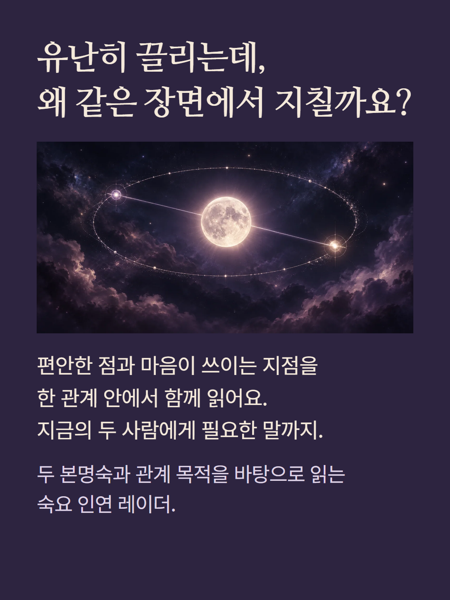
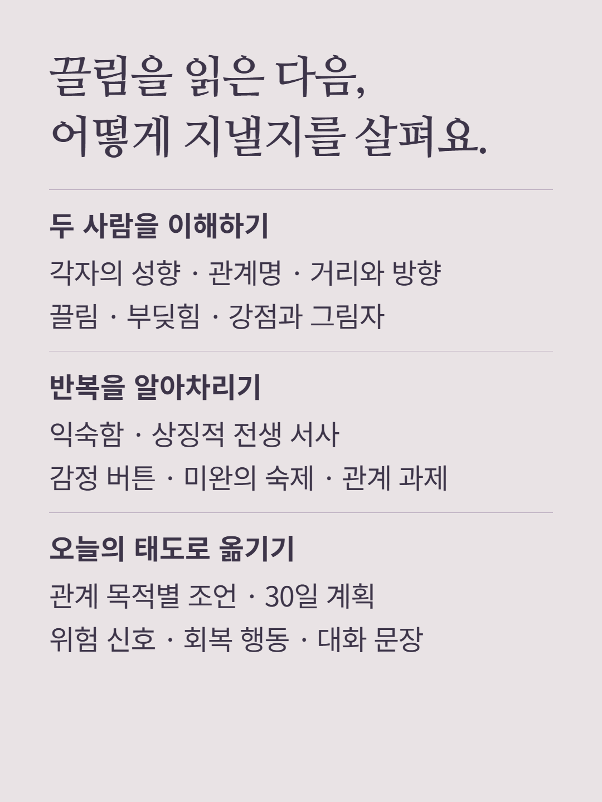
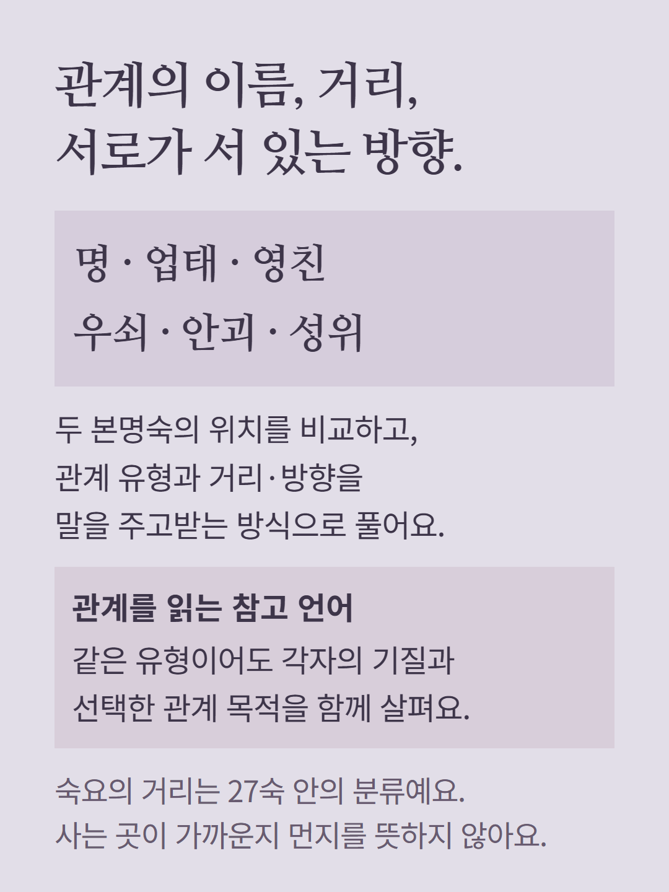
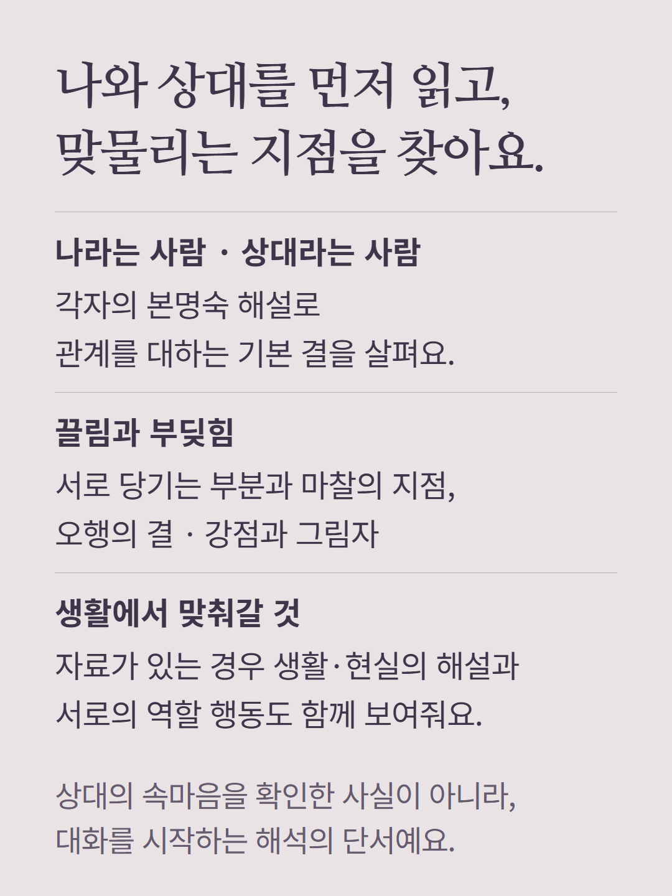
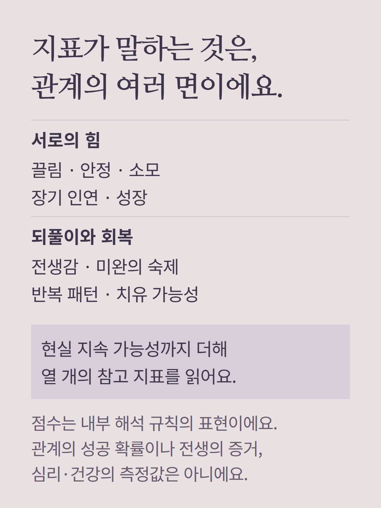
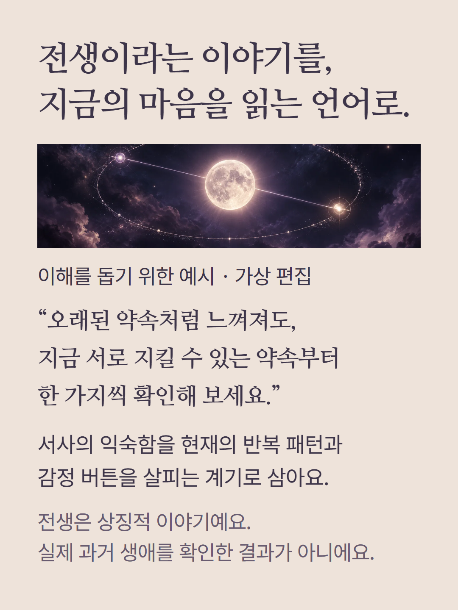
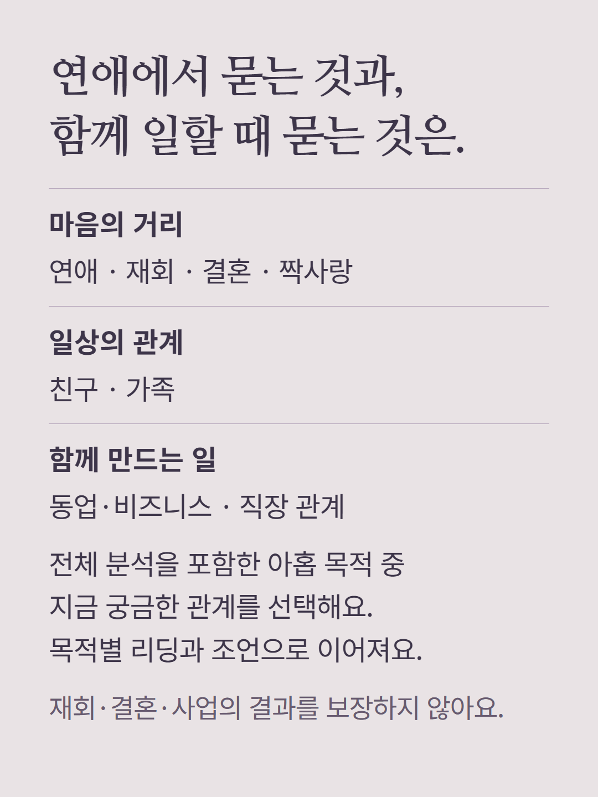
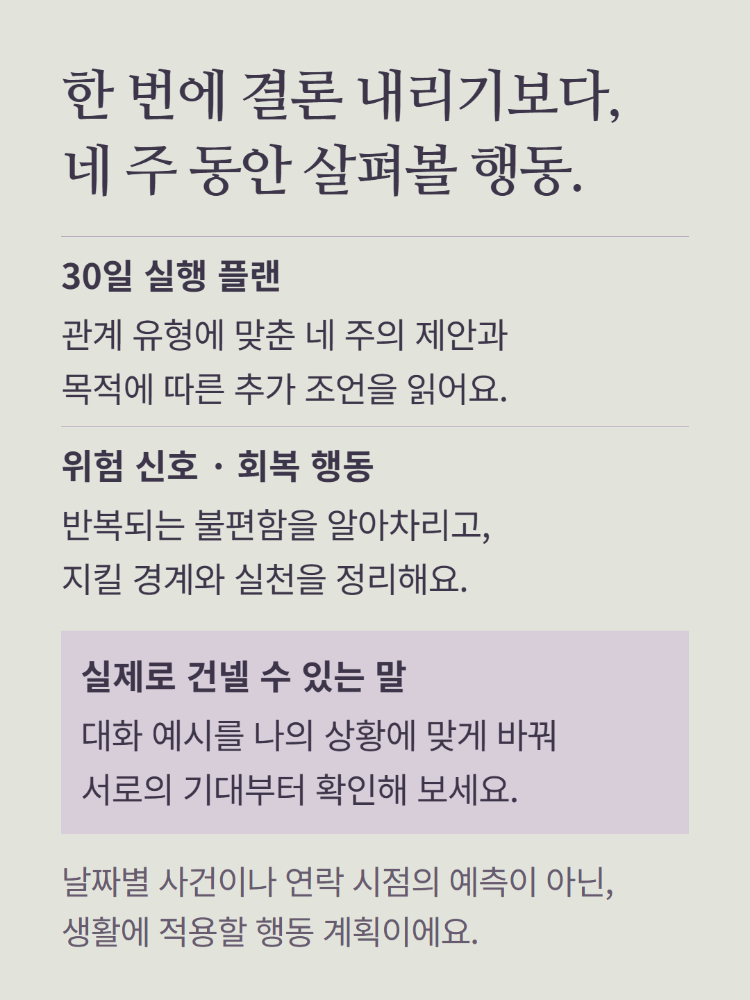
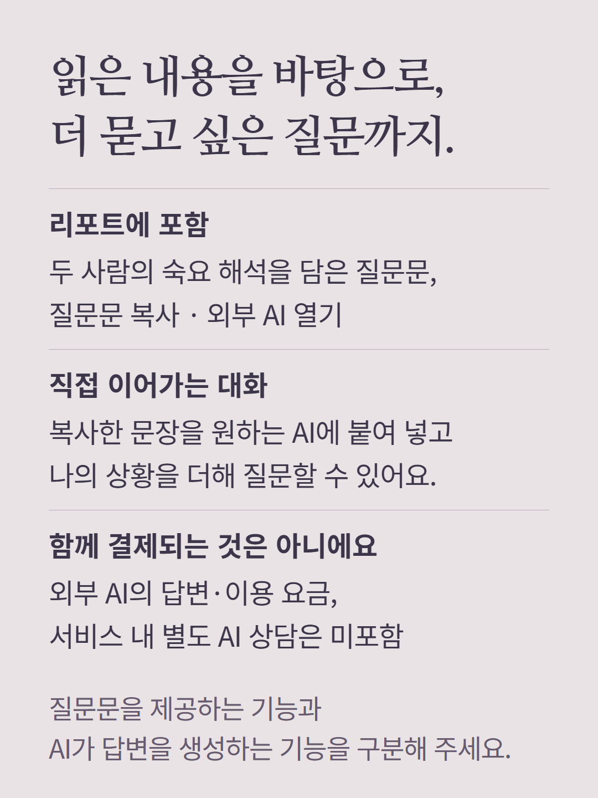
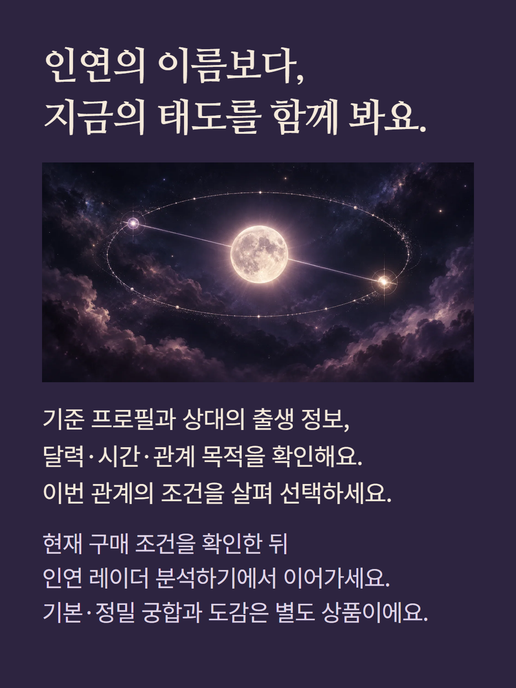

두 사람의 본명숙과 27숙 관계법을 바탕으로 읽는 숙요 인연 레이더입니다. 기준 프로필, 상대의 생년월일과 달력·시간, 관계 목적을 확인합니다. 관계명·거리·방향·각자의 성향·끌림과 갈등·반복 패턴·생활 조언·30일 실행 플랜·대화 예시를 로컬 규칙과 작성된 해석 자료로 구성합니다. 생활과 현실의 해설 및 서로의 역할 행동은 해당 데이터가 있는 경우 표시됩니다. 9개 축의 레이더와 10개 참고 지표는 서비스 내부 지표이며 성공·재회 확률이나 전생의 증거가 아닙니다. 전생 서사는 상징적 이야기로, 실제 과거 생애를 확인한 결과가 아닙니다. 관계 거리는 27숙 안의 관계 분류이며 실제 거주 거리가 아닙니다. 30일 계획은 네 주의 행동 제안이며 날짜별 사건 예측이 아닙니다. AI에 이어 물을 질문문과 복사·외부 AI 열기 기능이 포함되지만, 외부 AI의 답변이나 이용 요금은 포함하지 않습니다. 기본·정밀 궁합, 인연 도감, 서비스 내 AI 상담은 별도 상품입니다. 예시는 이해를 돕기 위한 가상 편집이며 고객 결과나 구매 후기가 아닙니다. 상대와 관계 목적에 따른 현재 구매 조건을 확인해 주세요.